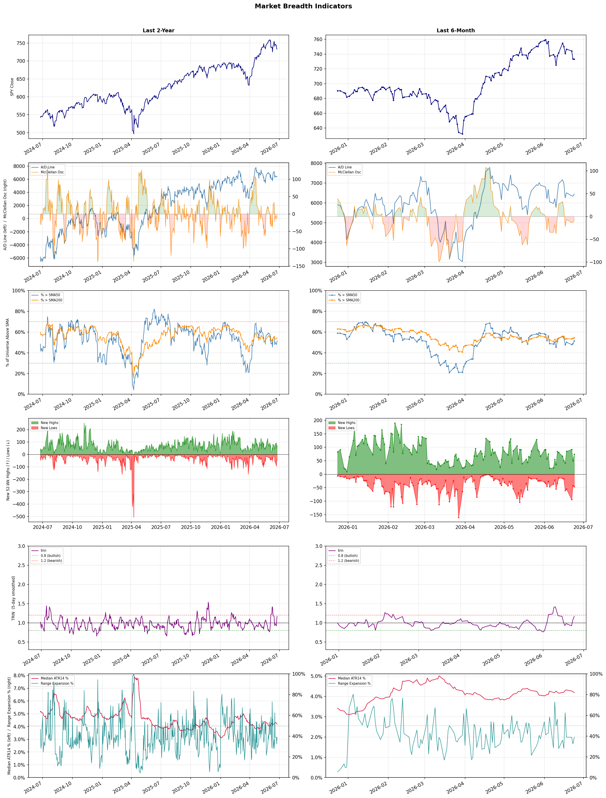

A daily market breadth and sector rotation report for active investors
| Item | Read |
|---|---|
| Regime | Selective Risk-On |
| Risk posture | Selective |
| Universe | 1,347 stocks tracked · 74 new 52-week highs · 30 active swing setups |
| Breadth | 51.5% of tracked stocks are above SMA50 — neutral range, new highs exceed new lows (74 vs 46), McClellan oscillator (breadth momentum) is negative at -5.9 |
| Leadership | Airlines, Healthcare Plans, and Diagnostics & Research |
| Weakest groups | Gold, Financial Data & Stock Exchanges, and Auto Manufacturers |
Use this report to prioritize research and chart review; validate entries, stops, liquidity, earnings, and risk before acting.
| Item | Read |
|---|---|
| Primary read | Selective Risk-On regime with Selective risk posture. |
| Research queue | ULCC, AAL, UAL, ALK, LUV |
| Leadership focus | Airlines, Healthcare Plans, and Diagnostics & Research |
| Caution list | Gold, Financial Data & Stock Exchanges, and Auto Manufacturers |
| Review prompt | Check extension risk, chart location, fundamentals, valuation, and earnings before using any research row. |
| Item | Read |
|---|---|
| Primary read | 2 active risk warnings; use screen output as watchlist input only. |
| Bullish screens | DAL, GH, ILMN, NTRA, EWTX |
| Bearish screens | none |
| Alerts / levels | Automated trigger, stop, ATR, liquidity, reward/risk, and event-risk levels are pending future enrichment. |
| Review prompt | Open the linked chart, define trigger and invalidation, then check liquidity and event risk independently. |
Risk Posture: Selective — screen backdrop supports selective research in leading industries
Metric context: McClellan below -50 = elevated selling pressure; below -100 = washout territory. Range Expansion = share of stocks with daily range above their 20-day average. Signal Density = share of tracked names appearing in signal screens.
| Breadth Date | % > SMA50 | % > SMA200 | New Highs | New Lows | McClellan | Median Range | Avg Range | Median ATR14 | Range Expansion | Signal Density |
|---|---|---|---|---|---|---|---|---|---|---|
| 2026-06-24 | 51.5% | 54.4% | 74 | 46 | -5.9 | 3.6% | 4.4% | 4.2% | 39.0% | 8.7% |

Prior comparison date: June 23, 2026
| Metric | Prior | Current | Change |
|---|---|---|---|
| Regime | Neutral | Selective Risk-On | changed |
| Risk Posture | Cautious | Selective | changed |
| % > SMA50 | 48.8% | 51.5% | +2.7 pts |
| % > SMA200 | 53.9% | 54.4% | +0.5 pts |
| New Highs | 50 | 74 | +24 |
| New Lows | 42 | 46 | -4 |
Top-10 industries entering: Building Products & Equipment and Travel Services. Top-10 industries leaving: Computer Hardware and Electronic Components. New multi-signal long setups: BCRX, CCEP, CRSR, DOC, EWTX, GH, GNW, ILMN, INDV, KVUE. New multi-signal short setups: none.
| Status | Tickers | Read |
|---|---|---|
| Added | BCRX, CCEP, CRSR, DOC, EWTX, GH, GNW, ILMN | New technical screen matches vs prior report. |
| Removed | AEE, AFL, BABA, BAC, DHT, FRO, HLIT, INOD | No longer present in today's technical screen matches. |
| Still Active | ALKS, ALL, ASB, CFG, CVBF, DAL, DHC, EVRG | Appeared in both current and prior reports. |
| Promoted | none | Model Screen Score improved by at least 15 points. |
| Downgraded | TRV | Model Screen Score declined by at least 15 points. |
| Direction | Industry | ETF | Prior Rank | Current Rank | Days | Rank Change |
|---|---|---|---|---|---|---|
| Rose | Building Products & Equipment | XHB | 92 | 9 | 35 | +83 |
| Rose | Diagnostics & Research | N/A | 76 | 3 | 42 | +73 |
| Rose | Airlines | N/A | 73 | 1 | 42 | +72 |
| Rose | Packaging & Containers | N/A | 86 | 18 | 42 | +68 |
| Rose | Insurance - Property & Casualty | KIE | 82 | 15 | 28 | +67 |
Bull: The Building Products & Equipment sector is likely experiencing a rise in relative strength due to a combination of improving sentiment in the housing market, as indicated by headlines discussing Lennar and PulteGroup's potential recovery from recent slumps, and steady capital investment in building materials, which suggests ongoing demand for construction-related products. Additionally, the mention of mortgage rates and the growing $1 trillion club hints at a robust financial environment that could further stimulate housing activity and related investments, positioning the sector for sustained growth.
Bear: While there may be signs of improving sentiment in the housing market, the underlying fundamentals remain concerning. Rising mortgage rates, as highlighted in the recent headlines, could significantly dampen housing demand, making it difficult for companies like Lennar and PulteGroup to sustain any recovery. Additionally, the notion of a "growing $1 trillion club" could be misleading, as it may reflect inflated valuations rather than genuine economic strength, suggesting that the Building Products & Equipment sector could face headwinds from both financial tightening and a potential housing market correction.
Verdict: The Building Products & Equipment sector is likely experiencing a rise due to improving sentiment in the housing market, supported by steady capital investment in construction materials and the potential for a robust financial environment. However, key risks include rising mortgage rates that could dampen housing demand and lead to a correction, challenging the sustainability of this growth trajectory. Investors should closely monitor interest rate trends and housing market indicators to gauge the sector's resilience.
Sources: Yahoo Finance, Google News
Bull: The Diagnostics & Research sector is experiencing a rise in relative strength primarily due to a resurgence of investor interest in high-margin diagnostics stocks, as highlighted by Kalkine's report on June 2026. This renewed focus is likely driven by advancements in AI technology within healthcare, as emphasized by U.S. News, which is enhancing diagnostic capabilities and efficiency, thereby attracting capital into the sector. Additionally, the positive outlook provided by analysts, such as the compelling upside for Revvity, Inc. (RVTY) noted by DirectorsTalk, further supports the bullish sentiment around diagnostics stocks.
Bear: While the rising relative strength in the Diagnostics & Research sector may seem promising, it is crucial to consider that heightened investor interest could be driven more by speculative trends rather than sustainable fundamentals. The reliance on AI advancements, as highlighted by U.S. News, may create unrealistic expectations for immediate returns, especially as regulatory hurdles and integration challenges persist in the healthcare industry. Furthermore, the bullish outlook on specific stocks like Revvity, Inc. (RVTY) may not reflect the broader market dynamics, where increasing competition and potential pricing pressures could undermine profit margins across the sector.
Verdict: The Diagnostics & Research sector's rise is fundamentally driven by heightened investor interest in high-margin diagnostics stocks, fueled by advancements in AI technology that enhance diagnostic capabilities and efficiency. However, the key risk lies in the potential for speculative trends to overshadow sustainable fundamentals, as regulatory hurdles and integration challenges may lead to unrealistic expectations for immediate returns, particularly in the face of increasing competition and pricing pressures. Investors should cautiously evaluate the long-term viability of companies in this space, focusing on those with robust fundamentals and clear pathways to profitability.
Sources: Google News
Bull: The airline industry is experiencing a rising relative strength trend primarily due to a rebound in travel demand as the global economy continues to recover post-pandemic, which is highlighted by the positive sentiment in articles from Zacks and The Motley Fool recommending airline stocks as strong investment opportunities. Additionally, while recent profit warnings from companies like Delta may create short-term pressure, they also underscore the potential for long-term growth as airlines adjust their operations and pricing strategies to capitalize on increasing passenger volumes, suggesting a positive outlook for profitability in 2026 and beyond.
Bear: While the rebound in travel demand may appear promising, the airline industry remains vulnerable to significant headwinds, including rising fuel costs, labor shortages, and potential economic downturns that could dampen consumer spending. The recent profit warnings from Delta and others signal deeper operational challenges and profitability concerns that could undermine the optimistic projections for 2026, suggesting that the current rising relative strength trend may not be sustainable in the face of these persistent risks. Furthermore, the cyclical nature of the airline industry means that any short-term gains could quickly reverse if economic conditions worsen or if competition intensifies, making it a precarious investment landscape.
Verdict: The airline industry's rising relative strength is primarily driven by a robust rebound in travel demand as the global economy recovers, with airlines poised to benefit from increased passenger volumes and adjusted pricing strategies. However, key risks such as rising fuel costs, labor shortages, and potential economic downturns could undermine profitability and sustainability, making it crucial for investors to remain cautious and monitor these factors closely.
Sources: Google News
Bull: The Packaging & Containers industry is experiencing a rising relative strength trend primarily due to its resilience in the face of macroeconomic challenges, such as rising energy costs linked to the Iran war. Despite recent headlines highlighting the industry's struggles, the mention of specific stocks like Amcor suggests that investors are recognizing the long-term value and stability of key players in the sector. Additionally, as demand for sustainable packaging solutions continues to grow, companies within this industry are likely to benefit from a shift towards eco-friendly practices, positioning them favorably against other sectors.
Bear: While the relative strength trend may appear positive, the underlying pressures from rising energy costs due to geopolitical tensions, particularly the Iran war, are significant headwinds that could undermine profitability across the packaging and containers sector. Furthermore, the focus on sustainable packaging, while a potential growth area, may not be enough to offset the immediate financial strain from increased operational costs and declining consumer demand, leading to a potential downturn in earnings for key players like Amcor. In this volatile environment, the perceived stability of the industry may be more illusion than reality, warranting a more cautious investment approach.
Verdict: The Packaging & Containers industry is currently benefiting from a rising demand for sustainable packaging solutions, which positions key players like Amcor favorably despite macroeconomic challenges. However, the significant risk posed by rising energy costs due to geopolitical tensions, particularly the Iran war, could undermine profitability and lead to a downturn in earnings, necessitating a cautious investment approach. Investors should closely monitor operational costs and consumer demand trends to assess the sustainability of this upward momentum.
Sources: Google News
Bull: The rising relative strength of the Property & Casualty insurance industry, as reflected in the ETF KIE, can be attributed to robust earnings reports from key players, such as Employers Holdings and Enact Holdings, which indicate strong operational performance and resilience in the sector. Additionally, the positive sentiment surrounding major stocks like Globe Life and Aon, as highlighted in recent headlines, suggests that investors are increasingly confident in the industry's ability to navigate economic uncertainties, further bolstering interest in the sector. This combination of strong earnings and bullish outlooks is driving investor momentum towards Property & Casualty insurance stocks.
Bear: While the rising relative strength of the Property & Casualty insurance industry may seem promising, it’s essential to consider the broader economic context that could undermine this momentum. Rising interest rates and inflationary pressures may lead to increased claims costs and reduced profitability for insurers, potentially offsetting the positive earnings reports. Furthermore, the industry's dependence on economic stability makes it vulnerable to downturns, and any signs of economic weakness could quickly reverse investor sentiment, casting doubt on the sustainability of the current bullish outlook.
Verdict: The Property & Casualty insurance industry's rising strength is primarily driven by robust earnings from key players, indicating strong operational performance and investor confidence. However, a key risk to this momentum lies in the potential impact of rising interest rates and inflation, which could increase claims costs and threaten profitability, making it crucial for investors to closely monitor economic indicators that may signal a downturn.
Sources: Yahoo Finance, Google News
| Direction | Industry | ETF | Prior Rank | Current Rank | Days | Rank Change |
|---|---|---|---|---|---|---|
| Fell | Oil & Gas Equipment & Services | XES | 6 | 78 | 42 | -72 |
| Fell | Chemicals | N/A | 13 | 82 | 42 | -69 |
| Fell | Aerospace & Defense | ITA | 12 | 80 | 28 | -68 |
| Fell | Copper | COPX | 12 | 77 | 7 | -65 |
| Fell | Other Industrial Metals & Mining | N/A | 11 | 75 | 42 | -64 |
Bear: While the bull thesis attributes the decline in the relative strength of the SPDR S&P Oil & Gas Equipment & Services ETF (XES) to market volatility and investor caution, it overlooks the fundamental challenges facing the oil and gas sector, such as increasing regulatory pressures, a global shift towards renewable energy, and rising operational costs. Additionally, the focus on best-performing ETFs and stocks like Solaris Energy indicates a broader trend of investors moving away from traditional oil and gas services in favor of more sustainable and innovative energy solutions, suggesting a long-term decline in demand for conventional oil and gas equipment and services.
Bull: The Oil & Gas Equipment & Services sector, represented by the SPDR S&P Oil & Gas Equipment & Services ETF (XES), is likely experiencing a decline in relative strength due to a combination of market volatility and investor caution amid fluctuating oil prices, as highlighted in recent headlines discussing the surge in oil prices and the search for indirect investment opportunities. Additionally, the focus on best-performing ETFs and specific stocks like Solaris Energy suggests a shift in investor interest towards companies that are perceived as more resilient or innovative, potentially sidelining traditional oil and gas service firms in favor of those with stronger growth narratives.
Verdict: The Oil & Gas Equipment & Services sector is likely experiencing a decline due to fundamental challenges such as increasing regulatory pressures, a global shift towards renewable energy, and rising operational costs, which are prompting investors to favor more sustainable and innovative energy solutions. The key risk from the bear case is that as the transition to renewable energy accelerates, traditional oil and gas service firms may face diminishing demand, leading to long-term structural declines in the sector. Investors should closely monitor regulatory developments and shifts in energy consumption trends to inform their strategies in this space.
Sources: Yahoo Finance, Google News
Bear: While the bull analyst points to macroeconomic pressures and competitive dynamics as primary factors for the Chemicals sector's decline, it's crucial to recognize that the industry's long-term growth prospects are being undermined by structural issues such as overcapacity and rising input costs. Additionally, the increasing focus on sustainability and regulatory pressures may further constrain traditional chemical companies, making it difficult for them to adapt and compete effectively, especially against emerging players in the coal chemicals sector. This suggests that the challenges facing the Chemicals industry are not merely cyclical but may reflect deeper, systemic vulnerabilities that could hinder recovery.
Bull: The Chemicals sector is experiencing a decline in relative strength primarily due to macroeconomic pressures and competitive dynamics highlighted in recent headlines. The soaring basic materials sector, as noted by Morningstar, suggests that while the broader market is recovering, specific challenges within chemicals, such as increased competition from China's coal chemicals sector as reported by Reuters, are impacting profitability and growth prospects. Additionally, concerns about underperformance relative to other sectors, as indicated by Barchart.com regarding Air Products and Chemicals, may be contributing to a cautious sentiment among investors, leading to a relative decline in the Chemicals industry.
Verdict: The Chemicals sector's decline appears driven by a combination of macroeconomic pressures and heightened competition, particularly from China's coal chemicals sector, which is impacting profitability. However, the bear case highlights a critical risk: structural issues such as overcapacity and rising input costs, coupled with increasing sustainability regulations, could hinder long-term recovery and adaptability for traditional chemical companies. Investors should remain cautious and consider these systemic vulnerabilities when evaluating the industry's future prospects.
Sources: Google News
Bear: While the bull analyst attributes the decline in relative strength of the Aerospace & Defense sector to a temporary shift in focus towards the airline industry, this overlooks the fundamental challenges facing traditional defense stocks, including rising geopolitical tensions and budget constraints from government spending. Furthermore, the increasing emphasis on emerging technologies like autonomous weapons and drones may not translate into immediate revenue growth for established defense companies, as they grapple with outdated business models and the need for significant investment in R&D to remain competitive in a rapidly evolving landscape. This suggests that the sector may be entering a prolonged period of stagnation rather than a super-cycle.
Bull: The Aerospace & Defense sector is likely experiencing a decline in relative strength due to a temporary focus on the more rapidly recovering airline industry, as highlighted by the JETS vs. ITA comparison. Additionally, while there is significant interest in emerging technologies like autonomous weapons and cheap drones, which are reshaping warfare, the immediate market sentiment may be overshadowed by geopolitical uncertainties, such as the ongoing implications of the Iran conflict, which could be causing investors to adopt a more cautious stance on traditional defense stocks.
Verdict: The Aerospace & Defense sector's decline appears to be driven by a combination of heightened geopolitical tensions and budget constraints that are straining traditional defense spending, alongside a shift in investor focus towards the recovering airline industry. The key risk highlighted by the bear thesis is that established defense companies may struggle to adapt their outdated business models and invest adequately in emerging technologies, potentially leading to a prolonged stagnation in the sector. Investors should closely monitor government budget allocations and geopolitical developments to gauge the sector's recovery potential.
Sources: Yahoo Finance, Google News
Bear: While the bull analyst highlights macroeconomic concerns, it's crucial to recognize that the copper market is facing significant headwinds beyond just global manufacturing weakness. The rising interest rates not only dampen demand but also increase the cost of capital for mining companies, potentially leading to reduced investment in new projects and exploration. Furthermore, the recent headlines indicate a growing uncertainty in the broader market, with the AI trade becoming more complex and companies like Glencore experiencing stock declines, suggesting that investor sentiment may be shifting away from copper as a safe haven, thereby exacerbating the bearish outlook.
Bull: Copper's relative strength is likely falling due to concerns over global manufacturing weakening, as highlighted in the headline "If Global Manufacturing Weakens, Here’s What Happens to This Copper ETF." Additionally, the impact of rising interest rates, as suggested by the drop in Glencore's stock, can dampen demand for copper, typically used in construction and manufacturing, leading to bearish sentiment in the copper market. These macroeconomic factors are contributing to a cautious outlook for copper, even as its long-term fundamentals remain strong.
Verdict: The copper industry is likely experiencing a downturn due to a combination of weakening global manufacturing and rising interest rates, which dampen demand and increase costs for mining companies. A key risk highlighted by the bear thesis is the potential for reduced investment in new mining projects, which could further exacerbate supply constraints in the long term. Investors should closely monitor macroeconomic indicators and shifts in market sentiment, particularly regarding interest rates and global manufacturing trends, to inform their strategies in the copper market.
Sources: Yahoo Finance, Google News
Bear: While the bull analyst highlights technological advancements and productivity as key drivers for the sector, these factors may not be sufficient to offset the broader economic headwinds facing the Other Industrial Metals & Mining industry. With rising interest rates, inflationary pressures, and potential supply chain disruptions, demand for industrial metals could weaken significantly, overshadowing any benefits from innovation. Additionally, the sector's relative strength trend is falling, indicating that investor sentiment is already cautious, and without a clear catalyst for recovery, the outlook remains bearish.
Bull: The relative weakness of the Other Industrial Metals & Mining sector can be attributed to a combination of macroeconomic factors and evolving industry dynamics. The headlines indicate a growing focus on AI and technological advancements in mining, as highlighted by the Boston Consulting Group, suggesting that companies not adapting to these innovations may lag behind. Additionally, the emphasis on productivity and value creation from McKinsey & Company points to a shift in investor sentiment towards companies that can demonstrate superior operational efficiency, potentially sidelining those in the Other Industrial Metals & Mining sector that have not yet embraced these changes.
Verdict: The Other Industrial Metals & Mining sector is experiencing a decline primarily due to macroeconomic challenges, including rising interest rates and inflation, which are dampening demand for industrial metals. While technological advancements and productivity improvements could enhance operational efficiency, these benefits may not be sufficient to counteract the broader economic headwinds and investor caution. The key risk lies in the potential for sustained economic pressures to further weaken demand, making it crucial for companies to adapt quickly to changing market conditions to regain investor confidence.
Sources: Google News
| Industry | Rank | ETF | 7d | 14d | 28d | 42d | Chg 42d | Size | 20D | 60D | Composite | Active Setups |
|---|---|---|---|---|---|---|---|---|---|---|---|---|
| Airlines | 1 | N/A | 5 | 32 | 13 | 73 | +72 | 8 | 18.5% | 49.0% | 0.954 | 0 |
| Healthcare Plans | 2 | IHF | 7 | 3 | 10 | 4 | +2 | 10 | 16.9% | 79.9% | 0.930 | 0 |
| Diagnostics & Research | 3 | N/A | 13 | 9 | 32 | 76 | +73 | 16 | 20.2% | 38.1% | 0.923 | 0 |
| REIT - Hotel & Motel | 4 | XLRE | 6 | 2 | 9 | 17 | +13 | 9 | 12.6% | 37.1% | 0.917 | 0 |
| Biotechnology | 5 | XBI | 15 | 60 | 25 | 34 | +29 | 93 | 13.4% | 30.6% | 0.870 | 2 |
| REIT - Office | 6 | XLRE | 9 | 4 | 15 | 27 | +21 | 8 | 9.3% | 47.3% | 0.842 | 0 |
| Semiconductor Equipment & Materials | 7 | SOXX | 3 | 22 | 6 | 2 | -5 | 17 | 3.4% | 68.3% | 0.829 | 1 |
| Banks - Diversified | 8 | N/A | 10 | 15 | 17 | 41 | +33 | 16 | 5.5% | 24.5% | 0.821 | 0 |
| Building Products & Equipment | 9 | XHB | 25 | 70 | 79 | 68 | +59 | 8 | 11.3% | 20.8% | 0.817 | 0 |
| Travel Services | 10 | N/A | 20 | 50 | 40 | 71 | +61 | 10 | 13.2% | 25.1% | 0.799 | 0 |
Rank columns (7d–42d) show the industry's rank that many trading days ago — lower is stronger. Chg 42d = rank change vs 42 trading days ago — positive means the industry moved up. 20D and 60D are the mean stock return within the industry over that period. Active Setups: count of today's swing-trade candidates from this industry appearing across all signal screens.
| Industry | Rank | ETF | 7d | 14d | 28d | 42d | Chg 42d | Size | 20D | 60D | Composite | Active Setups |
|---|---|---|---|---|---|---|---|---|---|---|---|---|
| Gold | 88 | GDX | 70 | 96 | 85 | 49 | -39 | 27 | -18.4% | -14.8% | 0.057 | 0 |
| Financial Data & Stock Exchanges | 87 | N/A | 88 | 93 | 91 | 64 | -23 | 7 | -13.5% | -7.0% | 0.082 | 0 |
| Auto Manufacturers | 86 | N/A | 84 | 92 | 48 | 67 | -19 | 10 | -11.7% | -8.3% | 0.130 | 1 |
| Agricultural Inputs | 85 | N/A | 87 | 94 | 68 | 53 | -32 | 5 | -9.3% | -18.3% | 0.141 | 0 |
| Uranium | 84 | URA | 74 | 95 | 95 | 58 | -26 | 6 | -11.4% | -7.8% | 0.150 | 0 |
| Oil & Gas E&P | 83 | XOP | 86 | 62 | 80 | 29 | -54 | 26 | -9.9% | -20.7% | 0.163 | 0 |
| Chemicals | 82 | N/A | 77 | 86 | 56 | 13 | -69 | 8 | -15.3% | -10.5% | 0.164 | 0 |
| Oil & Gas Integrated | 81 | XLE | 78 | 40 | 54 | 26 | -55 | 10 | -10.7% | -14.6% | 0.192 | 0 |
| Aerospace & Defense | 80 | ITA | 58 | 68 | 12 | 36 | -44 | 25 | -20.6% | 1.3% | 0.221 | 0 |
| Utilities - Independent Power Producers | 79 | XLU | 45 | 98 | 74 | 88 | +9 | 5 | -7.1% | 0.7% | 0.250 | 0 |
Rank columns (7d–42d) show the industry's rank that many trading days ago — lower is stronger. Chg 42d = rank change vs 42 trading days ago — positive means the industry moved up. 20D and 60D are the mean stock return within the industry over that period. Active Setups: count of today's swing-trade candidates from this industry appearing across all signal screens.
These are research candidates from top-ranked stocks, capped at five names per industry to avoid over-concentration. Returns shown (60D, 120D, 250D) are historical — they reflect where prices have already moved, not forward expectations. Extension Risk flags names that may require extra patience or a better entry point. They are not buy signals.
Chart: TV = TradingView chart (opens in browser); PDF = local chart file (if downloaded).
| Ticker | Name | Industry | Industry Rank | Market Cap | 60D Hist | 120D Hist | 250D Hist | Extension Risk | Research Reason | Chart |
|---|---|---|---|---|---|---|---|---|---|---|
| ULCC | Frontier Group | Airlines | 1 | N/A | 110.5% | 58.1% | 105.2% | Very extended | Top-ranked in industry; very extended | TV |
| AAL | American Airlines | Airlines | 1 | N/A | 69.3% | 13.8% | 57.7% | Extended | Top-ranked in industry; extended | TV |
| UAL | United Airlines | Airlines | 1 | N/A | 47.6% | 17.1% | 70.1% | Constructive | Top-ranked in industry | TV |
| ALK | Alaska Air | Airlines | 1 | N/A | 42.6% | 2.9% | 6.0% | Constructive | Top-ranked in industry | TV |
| LUV | Southwest Airlines | Airlines | 1 | N/A | 36.3% | 23.4% | 62.5% | Constructive | Top-ranked in industry | TV |
| CLOV | Clover Health | Healthcare Plans | 2 | N/A | 197.7% | 118.0% | 90.1% | Very extended | Top-ranked in industry; very extended | TV |
| OSCR | Oscar Health | Healthcare Plans | 2 | N/A | 161.8% | 101.0% | 52.0% | Very extended | Top-ranked in industry; very extended | TV |
| HUM | Humana | Healthcare Plans | 2 | N/A | 113.9% | 39.6% | 51.6% | Very extended | Top-ranked in industry; very extended | TV |
| CVS | CVS Health | Healthcare Plans | 2 | N/A | 45.4% | 27.6% | 53.5% | Constructive | Top-ranked in industry | TV |
| ALHC | Alignment Healthcare | Healthcare Plans | 2 | N/A | 30.5% | 12.7% | 58.3% | Constructive | Top-ranked in industry | TV |
| TWST | Twist Bioscience | Diagnostics & Research | 3 | N/A | 105.1% | 184.1% | 147.0% | Very extended | Top-ranked in industry; very extended | TV |
| NEO | NeoGenomics | Diagnostics & Research | 3 | N/A | 79.4% | 5.5% | 79.7% | Extended | Top-ranked in industry; extended | TV |
| ADPT | Adaptive Biotechnologies | Diagnostics & Research | 3 | N/A | 55.8% | 17.8% | 61.4% | Extended | Top-ranked in industry; extended | TV |
| NTRA | Natera | Diagnostics & Research | 3 | N/A | 42.3% | 13.0% | 58.4% | Constructive | Top-ranked in industry | TV |
| WGS | GeneDx Holdings | Diagnostics & Research | 3 | N/A | 11.3% | -50.4% | -28.6% | Constructive | Top-ranked in industry | TV |
| INN | Summit Hotel Properties Inc | REIT - Hotel & Motel | 4 | N/A | 57.9% | 37.5% | 35.3% | Extended | Top-ranked in industry; extended | TV |
| PEB | Pebblebrook Hotel Trust | REIT - Hotel & Motel | 4 | N/A | 51.9% | 62.2% | 96.2% | Extended | Top-ranked in industry; extended | TV |
| RLJ | RLJ Lodging Trust | REIT - Hotel & Motel | 4 | N/A | 51.3% | 47.0% | 54.4% | Extended | Top-ranked in industry; extended | TV |
| APLE | Apple Hospitality REIT Inc | REIT - Hotel & Motel | 4 | N/A | 44.8% | 38.9% | 43.9% | Constructive | Top-ranked in industry | TV |
| PK | Park Hotels & Resorts Inc | REIT - Hotel & Motel | 4 | N/A | 37.5% | 32.7% | 40.0% | Constructive | Top-ranked in industry | TV |
These are technical screen matches from existing signal files. They are not trade recommendations. Trigger, stop, ATR, liquidity, reward/risk, and event risk still require separate validation until those inputs are available.
Model Screen Score is weighted by signal count, industry rank, freshness, and setup type. It is not a probability of profit, expected return, or suitability rating. Industry cap: max 3 candidates per industry.
Signal glossary: Momentum Pullback = stock in an uptrend that has pulled back 10–30% and shows re-entry conditions. MA Compression = short- and long-term moving averages converging, often preceding a directional move. Three-Day Up/Down = three consecutive closes in the same direction. New 52Wk High/Low = price reached a new annual extreme.
Chart: TV = TradingView chart (opens in browser); PDF = local chart file (if downloaded).
| Ticker | Industry | Setups | Close | Industry Rank | Signal Count | Model Screen Score | Reason | Chart |
|---|---|---|---|---|---|---|---|---|
| DAL | Airlines | New 52Wk High; Three-Day Up | 90.65 | 1 | 2 | 100 | Multi-signal; top industry breakout | TV |
| GH | Diagnostics & Research | New 52Wk High; Three-Day Up | 136.96 | 3 | 2 | 100 | Multi-signal; top industry breakout | TV |
| ILMN | Diagnostics & Research | New 52Wk High; Three-Day Up | 175.09 | 3 | 2 | 100 | Multi-signal; top industry breakout | TV |
| NTRA | Diagnostics & Research | New 52Wk High; Three-Day Up | 259.97 | 3 | 2 | 100 | Multi-signal; top industry breakout | TV |
| EWTX | Biotechnology | New 52Wk High; Three-Day Up | 42.30 | 5 | 2 | 93 | Multi-signal; top industry breakout | TV |
| MRVI | Biotechnology | New 52Wk High; Three-Day Up | 5.76 | 5 | 2 | 93 | Multi-signal; top industry breakout | TV |
| RLAY | Biotechnology | New 52Wk High; Three-Day Up | 18.02 | 5 | 2 | 93 | Multi-signal; top industry breakout | TV |
| LFST | Medical Care Facilities | New 52Wk High; Three-Day Up | 9.65 | 11 | 2 | 85 | Multi-signal; new-high strength | TV |
| ALL | Insurance - Property & Casualty | New 52Wk High; Three-Day Up | 233.54 | 15 | 2 | 85 | Multi-signal; new-high strength | TV |
| TRV | Insurance - Property & Casualty | New 52Wk High; Three-Day Up | 320.74 | 15 | 2 | 85 | Multi-signal; new-high strength | TV |
| WRB | Insurance - Property & Casualty | MA Compression; Three-Day Up | 70.05 | 15 | 2 | 80 | Multi-signal; compression setup | TV |
| ALKS | Drug Manufacturers - Specialty & Generic | New 52Wk High; Three-Day Up | 50.45 | 17 | 2 | 77 | Multi-signal; new-high strength | TV |
| BCRX | Drug Manufacturers - Specialty & Generic | New 52Wk High; Three-Day Up | 10.00 | 17 | 2 | 77 | Multi-signal; new-high strength | TV |
| INDV | Drug Manufacturers - Specialty & Generic | New 52Wk High; Three-Day Up | 41.47 | 17 | 2 | 77 | Multi-signal; new-high strength | TV |
| ASB | Banks - Regional | New 52Wk High; Three-Day Up | 30.44 | 20 | 2 | 77 | Multi-signal; new-high strength | TV |
| CFG | Banks - Regional | New 52Wk High; Three-Day Up | 69.46 | 20 | 2 | 77 | Multi-signal; new-high strength | TV |
| CVBF | Banks - Regional | New 52Wk High; Three-Day Up | 22.05 | 20 | 2 | 77 | Multi-signal; new-high strength | TV |
| SPG | REIT - Retail | New 52Wk High; Three-Day Up | 222.15 | 21 | 2 | 77 | Multi-signal; new-high strength | TV |
| CRSR | Computer Hardware | Momentum Pullback | 8.66 | 14 | 2 | 70 | Multi-signal; pullback setup | TV |
| UMAC | Computer Hardware | Momentum Pullback | 19.52 | 14 | 2 | 70 | Multi-signal; pullback setup | TV |
| VSTS | Rental & Leasing Services | New 52Wk High; Three-Day Up | 13.49 | 28 | 2 | 70 | Multi-signal; new-high strength | TV |
| MNST | Beverages - Non-Alcoholic | New 52Wk High; Three-Day Up | 94.70 | 30 | 2 | 70 | Multi-signal; new-high strength | TV |
| KVUE | Household & Personal Products | MA Compression; Three-Day Up | 18.80 | 29 | 2 | 65 | Multi-signal; compression setup | TV |
| PG | Household & Personal Products | MA Compression; Three-Day Up | 152.04 | 29 | 2 | 65 | Multi-signal; compression setup | TV |
| CCEP | Beverages - Non-Alcoholic | MA Compression; Three-Day Up | 98.80 | 30 | 2 | 65 | Multi-signal; compression setup | TV |
| GNW | Insurance - Life | MA Compression; Three-Day Up | 9.29 | 37 | 2 | 65 | Multi-signal; compression setup | TV |
| DHC | REIT - Healthcare Facilities | New 52Wk High; Three-Day Up | 9.36 | 44 | 2 | 65 | Multi-signal; new-high strength | TV |
| DOC | REIT - Healthcare Facilities | New 52Wk High; Three-Day Up | 20.82 | 44 | 2 | 65 | Multi-signal; new-high strength | TV |
| WELL | REIT - Healthcare Facilities | New 52Wk High; Three-Day Up | 221.43 | 44 | 2 | 65 | Multi-signal; new-high strength | TV |
| EVRG | Utilities - Regulated Electric | New 52Wk High; Three-Day Up | 85.82 | 48 | 2 | 65 | Multi-signal; new-high strength | TV |
How To Use This Report
| Use | Purpose |
|---|---|
| Market map | Start with breadth, regime, risk warnings, and what changed since the prior report. |
| Industry scan | Use leading, deteriorating, rising, and declining industries to focus research. |
| Research queue | Treat long-term candidates as names for deeper fundamental, valuation, and chart review. |
| Technical review | Treat bullish and bearish screen matches as watchlist inputs that require independent trigger, stop, liquidity, and event-risk checks. |
| Source follow-up | Use chart links and source files to verify raw inputs before relying on any row. |
What This Report Is Not
| Not | Meaning |
|---|---|
| Investment advice | The report does not evaluate personal objectives, risk tolerance, tax situation, account type, or suitability. |
| Buy/sell recommendation | Named tickers are research candidates or screen matches, not recommendations to transact. |
| Price target | The report does not provide fair value estimates, targets, or expected returns. |
| Trade plan | Trigger, stop, sizing, reward/risk, liquidity, and event-risk review remain separate user work. |
| Performance claim | Model Screen Score is not validated historical performance or a forecast of future results. |
| Item | Note |
|---|---|
| Version | Daily Report Methodology v1 |
| Model Screen Score | Screen-fit rank based on signal count, industry rank, freshness, and setup type. |
| Not predictive proof | The score is not expected return, probability of profit, historical validation, or suitability analysis. |
| Industry ranks | Composite industry ranks use existing daily ranking outputs and historical rank columns when available. |
| Research candidates | Long-term rows are research candidates from ranked stocks and leading industries, with historical returns labeled as historical only. |
| Technical matches | Bullish and bearish rows are screen matches requiring independent chart, trigger, stop, liquidity, and event-risk review. |
| Source | Status | Rows | Path |
|---|---|---|---|
| Market breadth | present | 1253 | breadth_20260624.csv |
| Industry composite rankings | present | 88 | all_industry_composite_20260624.csv |
| Top ranked stocks | present | 195 | top_ranked_composite_20260624.csv |
| All ranked stocks | present | 1347 | all_stocks_composite_sorted_20260624.csv |
| Top momentum pullbacks | present | 1496 | top_momentum_pullbacks_20260624.csv |
| MA compression | present | 1496 | ma_compression_stocks_20260624.csv |
| Three-day up/down | present | 388 | three_day_up_down_stocks_20260624.csv |
| New 52-week members | present | 120 | breadth_new_52wk_members_20260624.csv |
This report is generated from automated technical screens and is for informational and research purposes only. It is not investment advice, a solicitation, or a recommendation to buy or sell any security. Past performance is not indicative of future results. You are solely responsible for your own investment decisions. Consult a licensed financial advisor before acting on any information herein.